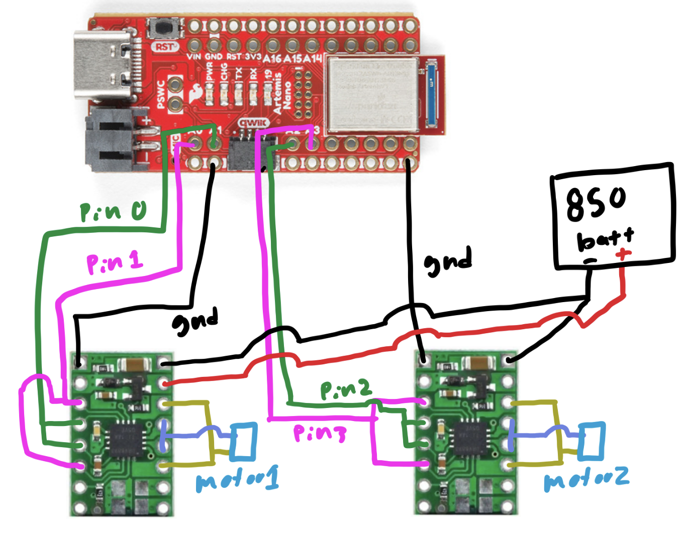
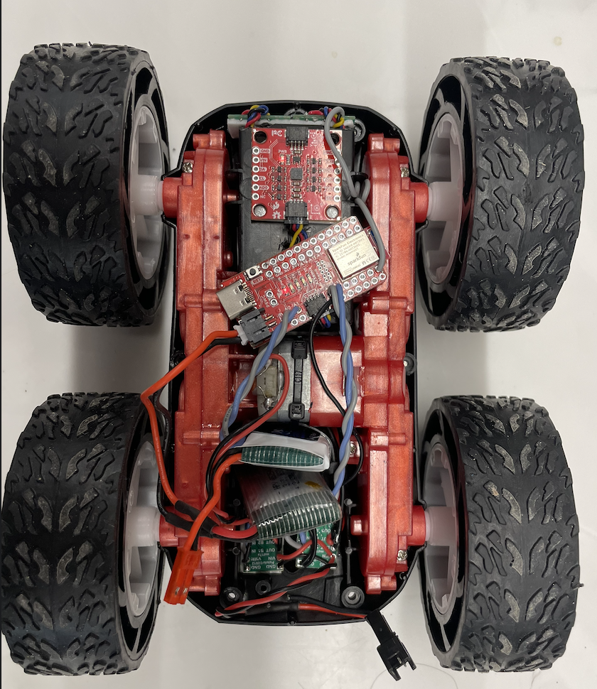

Lab 4: Motors & PWM
Overview
This lab adds dual DRV8833 motor drivers to the robot and characterizes how PWM duty cycle and motor supply voltage affect wheel motion. Bench tests use the Artemis to generate PWM, an oscilloscope to visualize signals, and a series of calibration scripts to find reliable drive and turn PWM levels for open-loop motion.
1. Prelab
1.1 Wiring diagram
Two DRV8833 motor drivers were added to control the left and right motors. Each driver is powered by an external battery that supplies the motor voltage, while the Artemis provides PWM control signals and a shared ground reference. Motor control lines are assigned to analog-capable pins A0–A3 to support PWM output.

2. Lab
2.1 PWM signal characterization
This video shows the oscilloscope setup and the observed PWM waveform during testing. It captures how the Artemis output changes as the PWM duty cycle is ramped, providing a direct view of the signal that will later drive the motors through the DRV8833.
2.2 Motor supply voltage choice
The DRV8833 datasheet specifies a motor supply range of 2.7 V to 10.8 V. Since the robot will ultimately run from a 3.7 V LiPo battery, the bench supply was set to 3.7 V during testing so the motor behavior would match the actual operating conditions as closely as possible.
2.3 PWM ramp test
This code configures two output pins, one held constantly high and one driven with PWM. In the main loop, the
HIGH_PIN is set to full output while PWM_PIN ramps from 0 to 254. This creates a gradually increasing
duty cycle on the PWM output, which is useful for observing how the signal changes on the oscilloscope and for testing how
increasing PWM affects motor response.
#define HIGH_PIN 0
#define PWM_PIN 1
void setup() {
pinMode(HIGH_PIN, OUTPUT);
pinMode(PWM_PIN, OUTPUT);
}
void loop() {
analogWrite(HIGH_PIN, 255);
for (int i = 0; i < 255; i++) {
analogWrite(PWM_PIN, i);
}
}2.4 Motor response to PWM
The same PWM ramp code was used while observing the motors directly. The PWM signal directly controls the average voltage delivered to the motors by rapidly switching the output on and off. As the duty cycle increases, the motors receive more effective power and spin faster. At low PWM values the motors may stall or twitch, while at higher values the rotation becomes smoother and more consistent.
#define HIGH_PIN 0
#define PWM_PIN 1
void setup() {
pinMode(HIGH_PIN, OUTPUT);
pinMode(PWM_PIN, OUTPUT);
}
void loop() {
analogWrite(HIGH_PIN, 255);
for (int i = 0; i < 255; i++) {
analogWrite(PWM_PIN, i);
}
}2.5 Both wheels under PWM
Both wheels spin under the same PWM command, demonstrating that the two motor channels are receiving equivalent control signals. This verifies that both drivers are wired correctly and that the motors respond similarly when given the same duty cycle.
2.6 Robot layout
This image shows the full car layout with the Artemis, motor drivers, battery, and wiring secured onto the chassis. The components are arranged compactly and firmly mounted so the robot can move without loose connections or shifting hardware.

2.7 Minimum PWM for straight driving
This code was used to determine the minimum PWM needed for the motors to reliably move the car on the ground. Testing showed that the minimum PWM required to consistently overcome static friction and produce motion on the ground was approximately 40.
#define L_HIGH 1
#define L_PWM 0
#define R_HIGH 2
#define R_PWM 3
const int PWM_MIN = 25;
const int PWM_MAX = 40;
const int INTERVALS = 5;
void setup() {
Serial.begin(115200);
pinMode(L_HIGH, OUTPUT);
pinMode(L_PWM, OUTPUT);
pinMode(R_HIGH, OUTPUT);
pinMode(R_PWM, OUTPUT);
// set motor directions
analogWrite(L_HIGH, 0); // left forward
analogWrite(R_HIGH, 0); // right reversed
}2.8 Open-loop straight driving
The car was already able to drive in a reasonably straight line without requiring additional calibration. Because the two motors behaved similarly under the chosen PWM values, no extra correction factor was needed for this test. This was verified in the video.
2.9 Open-loop drive and turn sequence
This demonstration uses open-loop control, meaning the robot follows a pre-programmed sequence of motor commands without any sensor feedback. The code drives forward, pauses, executes a turn by commanding opposite wheel directions, pauses again, and repeats the sequence. Since no encoder or IMU feedback is used, the robot does not correct for drift or accumulated error during motion.
#define L_REVERSE 1
#define L_PWM 0
#define R_REVERSE 2
#define R_PWM 3
const int DRIVE_PWM = 70;
const int TURN_PWM = 160;
void setup() {
pinMode(L_REVERSE, OUTPUT);
pinMode(L_PWM, OUTPUT);
pinMode(R_REVERSE, OUTPUT);
pinMode(R_PWM, OUTPUT);
analogWrite(L_REVERSE, 0);
analogWrite(R_REVERSE, 0);
analogWrite(L_PWM, DRIVE_PWM);
analogWrite(R_PWM, DRIVE_PWM);
delay(1000);
analogWrite(L_PWM, 0);
analogWrite(R_PWM, 0);
delay(500);
analogWrite(L_PWM, 0);
analogWrite(L_REVERSE, TURN_PWM);
analogWrite(R_PWM, TURN_PWM);
analogWrite(R_REVERSE, 0);
delay(150);
analogWrite(L_PWM, 0);
analogWrite(L_REVERSE, 0);
analogWrite(R_PWM, 0);
analogWrite(R_REVERSE, 0);
delay(500);
analogWrite(L_PWM, DRIVE_PWM);
analogWrite(L_REVERSE, 0);
analogWrite(R_PWM, DRIVE_PWM);
analogWrite(R_REVERSE, 0);
delay(1000);
analogWrite(L_PWM, 0);
analogWrite(L_REVERSE, 0);
analogWrite(R_PWM, 0);
analogWrite(R_REVERSE, 0);
delay(500);
analogWrite(L_PWM, TURN_PWM);
analogWrite(L_REVERSE, 0);
analogWrite(R_PWM, 0);
analogWrite(R_REVERSE, TURN_PWM);
delay(150);
analogWrite(L_PWM, 0);
analogWrite(L_REVERSE, 0);
analogWrite(R_PWM, 0);
analogWrite(R_REVERSE, 0);
delay(500);
analogWrite(L_PWM, DRIVE_PWM);
analogWrite(L_REVERSE, 0);
analogWrite(R_PWM, DRIVE_PWM);
analogWrite(R_REVERSE, 0);
delay(1000);
analogWrite(L_PWM, 0);
analogWrite(L_REVERSE, 0);
analogWrite(R_PWM, 0);
analogWrite(R_REVERSE, 0);
}
void loop() {
}2.10 PWM frequency discussion
The default analogWrite frequency is adequate for these motors, so manually increasing the PWM frequency is not
strictly necessary for basic operation. The motors respond well at the standard rate, and the existing signal is fast enough that
the mechanical system averages it into smooth motion. A higher PWM frequency could reduce audible noise and potentially make the
motor current smoother, but for this lab it would not provide a major practical advantage.
2.11 Turn-in-place calibration
This calibration script was used to determine the minimum PWM values required for turning in place. Testing showed that the robot needed a startup PWM of approximately 140 to overcome static friction and begin rotating, while a lower PWM of approximately 110 was sufficient to maintain the turn once the wheels were already moving. The brief higher-power kick starts the rotation, and the reduced holding PWM keeps the turn going without applying unnecessary extra power.
#define L_REV 1
#define L_FWD 0
#define R_REV 2
#define R_FWD 3
const int PWM_MIN = 110;
const int PWM_MAX = 150;
const int STEP = 5;
const int KICK_MS = 250;
const int HOLD_MS = 1500;
const int PAUSE_MS = 800;
void setup() {
pinMode(L_FWD, OUTPUT);
pinMode(L_REV, OUTPUT);
pinMode(R_FWD, OUTPUT);
pinMode(R_REV, OUTPUT);
analogWrite(L_FWD, 0); analogWrite(L_REV, 0);
analogWrite(R_FWD, 0); analogWrite(R_REV, 0);
}
void loop() {
for (int run_pwm = PWM_MIN; run_pwm <= PWM_MAX; run_pwm += STEP) {
int kick_pwm = run_pwm + 30;
if (kick_pwm > 255) kick_pwm = 255;
analogWrite(L_FWD, kick_pwm); analogWrite(L_REV, 0);
analogWrite(R_FWD, 0); analogWrite(R_REV, kick_pwm);
delay(KICK_MS);
analogWrite(L_FWD, run_pwm); analogWrite(L_REV, 0);
analogWrite(R_FWD, 0); analogWrite(R_REV, run_pwm);
delay(HOLD_MS);
analogWrite(L_FWD, 0); analogWrite(L_REV, 0);
analogWrite(R_FWD, 0); analogWrite(R_REV, 0);
delay(PAUSE_MS);
analogWrite(L_FWD, 0); analogWrite(L_REV, kick_pwm);
analogWrite(R_FWD, kick_pwm); analogWrite(R_REV, 0);
delay(KICK_MS);
analogWrite(L_FWD, 0); analogWrite(L_REV, run_pwm);
analogWrite(R_FWD, run_pwm); analogWrite(R_REV, 0);
delay(HOLD_MS);
analogWrite(L_FWD, 0); analogWrite(L_REV, 0);
analogWrite(R_FWD, 0); analogWrite(R_REV, 0);
delay(PAUSE_MS);
}
}